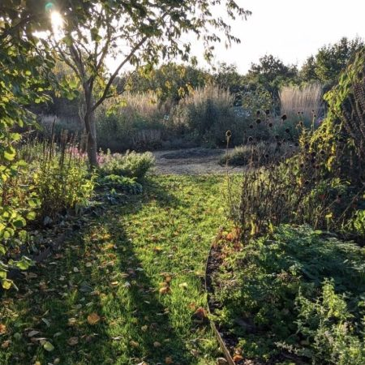
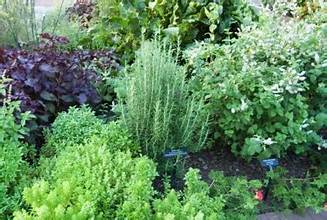
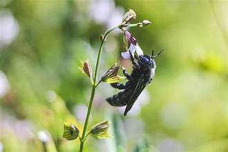
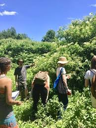
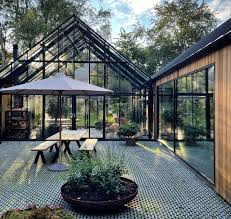

Ismerje meg történetünket!
1920: Az alapító, Nagy István megnyitotta az első gyógynövénykertészetet, amely kezdetben családi vállalkozásként működött, és főként helyi gyógynövényeket termesztett.

1950: A kertészet jelentősen kibővült, új üvegházak épültek, és a gyógynövények választéka is bővült. Ekkor kezdődött a nagyobb volumenű termesztés.

1980: A kertészet áttért a bio és vegyszermentes termesztési módszerekre, ezzel úttörő szerepet vállalva a fenntartható növénytermesztés terén.

2000: Elindultak az oktatási programok és workshopok, ahol a látogatók gyakorlati tudást szerezhettek a gyógynövények felhasználásáról és gondozásáról.

2020: 100 éves jubileumi évünk alkalmából teljes körű megújuláson ment keresztül a kertészet. Modern látogatóközpont, élménykertek és interaktív kiállítások várják a természet szerelmeseit.
